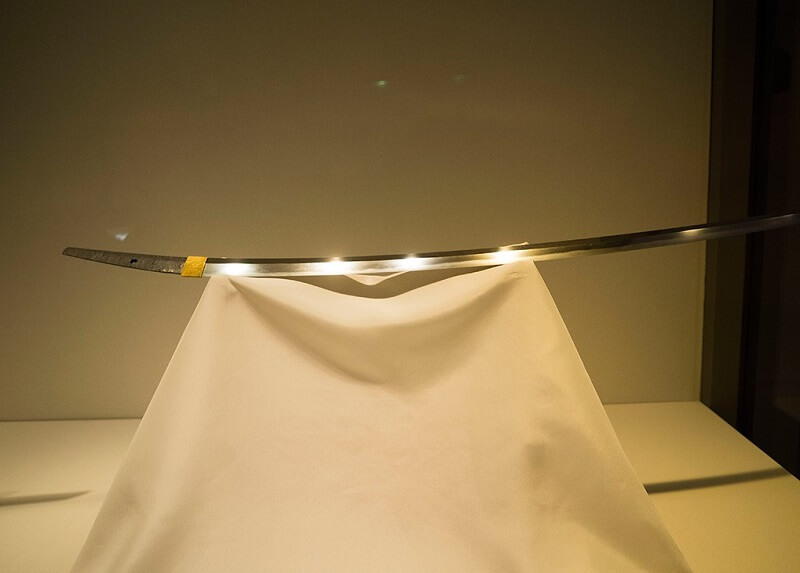

.png)
.png)
The well-known and historically significant Japanese katana known as Dojigiri is regarded as one of the most significant swords in Japanese culture. According to legend, the legendary samurai Minamoto no Yoshitsune used the sword in the 12th century to vanquish the demon Ibaraki.
The sword, which is renowned for its distinctive and elaborate design, was made in Japan's Yamato area during the Heian era (794-1185). The sword's blade has a curved curvature that is typical of Japanese katanas and is decorated with a dragon pattern. The sword's hilt is composed of black lacquered wood, wrapped with silk cord, and embellished with gold and silver hardware.
According to legend, the Minamoto clan's adversaries, the Taira clan, were the original owners of Dojigiri. When Minamoto no Yoshitsune conquered the Taira clan in the Battle of Dannoura in 1185, he took the sword as a prize. The sword's strength and renown went over all of Japan, and it is supposed to have been so sharp that it could cut through iron.
Currently on display in the Tokyo National Museum, dojigiri is regarded as a national treasure of Japan. The Japanese government has designated the sword as an Important Cultural Property, and sword lovers and collectors all over the world highly value it.
The mythology of Dojigiri, a legendary Japanese sword that was important to Japanese history and culture, is an intriguing one, to sum up. The sword's complex design, razor-sharpness, and strength make it a highly valued artifact and an essential component of Japanese history.